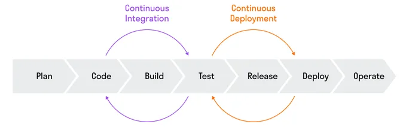

- CI/CD
- практика по автоматизации сборки, тестирования и развертывания
приложений ["Continuous Integration / Continuous Deployment"]
- DevOps
- набор процессов и инструментов, которые помогают наладить
технологические процессы и взаимодействие специалистов внутри команды ["Development & Operations"]
- CI
- процесс автоматического сбора кода из разных источников (например,
Git-репозиториев), выполнения тестов и сборки приложения ["Continuous Integration"]
- CD
- процесс автоматического развертывания приложения на различных
стадиях, включая тестовые, стейджинг и продакшен-среды ["Continuous Deployment/Delivery"]
CI/CD включает семь этапов:
- Plan — планирование
На этом этапе планируют разработку и поставку
приложения, определяют требования и задачи проекта, распределяют ресурсы команды и ставят цели.
-
Code — написание кода
Разработчики пишут код для каждой части
программного продукта и создают его функционал, комментируют и документируют код, проводят ревью кода.
-
Build — сборка
Система контроля версий собирает программный
продукт из написанного кода, используя средства автоматической сборки; создает исполняемые файлы или
пакеты для установки приложения.
-
Test — тестирование
Тестировщики проверяют собранный продукт. Они
проводят разные виды тестирования, в том числе автоматизированное.
-
Release — релиз
Команда создает установочные пакеты, подписывает
их цифровыми сертификатами и отдает продукт на проверку заказчику или тестовой группе пользователей. Если
в продукте находят ошибки, то его отправляют на доработку.
-
Deploy — развертывание
Программное обеспечение устанавливается на
реальной или тестовой среде, чтобы заказчики и конечные пользователи могли пользоваться продуктом.
-
Operate — эксплуатация
Продукт используется. Разработчики
проверяют работу продукта, оптимизируют его производительность, обрабатывают возникающие ошибки,
анализируют пользовательский опыт и планируют доработки продукта и разработку нового функционала.
